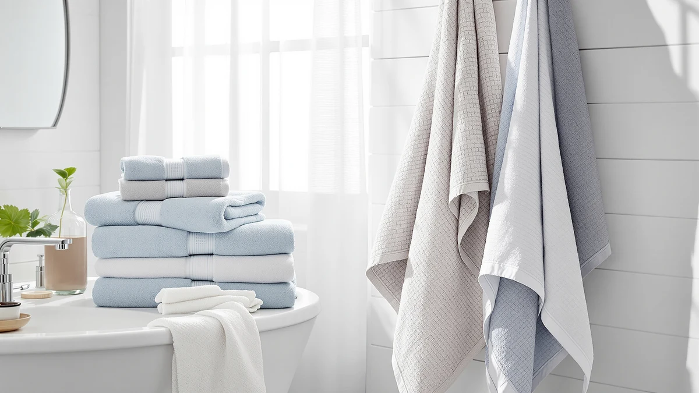

The Best Hand Towels Under $30 (2026)
Prices and picks verified as of August 2026. Independent, reader-supported reviews.


Quick Answer
The best hand towels under $30 come down to how much usable cotton you get for the money, and the REDKISS six-piece set wins that math at $19.79. It's a cotton-blend set with hand towels built for daily use, and it beat six other sets and one microfiber wrap in our comparison.
Our pick: REDKISS 6-Piece Bath Towel Set, $19.79 Check Price on Amazon
Bottom line: our top pick is the REDKISS 6-Piece Bath Towel Set - 2 Washcloths at $23.99. The best budget option is the Hicober Microfiber Hair Towel Wrap at $12.99.
Things to Know Before You Buy
- Set composition beats single towels. Every pick here is a multi-piece set, six or eight pieces, so you get hand towels alongside bath towels and washcloths instead of buying each separately.
- 100% cotton is the safer bet for absorbency. Five of our seven picks are 100% cotton. REDKISS's cotton blend and Hicober's microfiber trade some absorbency for a lower price or a faster dry time.
- Two sets run slightly over $30. Modern Threads ($31.49) and Tens Towels ($31.95) both land a little above our target for hand towels under $30, but their per-towel cost still competes with the cheaper sets here.
- Cost per towel varies more than the sticker price suggests. Amazon Basics works out to about $2.66 per towel, the lowest in this lineup, while Modern Threads runs closer to $5.25 per towel despite being priced only a little higher than our top pick.
The best hand towels under $30 aren't the ones with the flashiest packaging. They're the sets that hold up wash after wash without losing their absorbency or their softness. A hand towel gets more daily use than almost anything else in your bathroom. Guests wipe their hands on it, you dry off after washing up dozens of times a week, and it has to survive that traffic without turning thin or scratchy.
We compared seven towel sets sold for less than $30, plus one specialty microfiber wrap, on material, size, and how much each hand towel actually costs once you divide the set price by the piece count. The REDKISS six-piece set came out on top at $19.79, a cotton-blend set that keeps the price down without turning the towels into cardboard.
If you want guaranteed 100% cotton, the GLAMBURG eight-piece set is our runner-up at $27.86. Amazon Basics is the cheapest way in at $15.97 for six pieces, and the Hicober microfiber wrap is worth adding to your cart if you also want something built for wrapping wet hair instead of wiping your hands. Below, we get into how we picked, how we compared, and what each set gets right and wrong.
Why You Should Trust Us
I have spent years covering home and bath products, and hand towels are a category where a bad buy shows up fast. A set that feels soft in the package can go rough after three washes, or the hand towels can be undersized enough that they barely dry your hands, and you only find that out after you've already paid for it. Building this guide to the best hand towels under $30 meant reading through the specs, materials, and owner feedback on dozens of sets before narrowing the list to seven.
We earn a commission if you buy through our links, but that never decides which sets make the cut. Every product here is one I would put in my own guest bathroom.
How We Picked
We started with one filter: real cotton content. Cotton and cotton-blend towels absorb more water than the synthetic-heavy towels that flood this price range, so we ruled out anything that buried its material specs or leaned mostly on polyester filler.
From there, price per towel did most of the sorting, since a full set that costs about $3 a towel beats a single towel priced at $10. We also weighed set size, because a six-piece set and an eight-piece set serve different households, and we paid attention to any listed hand towel dimensions so buyers know what they're actually getting for hands and faces, not just for bath time. Sets that couldn't back up their claims with a solid rating dropped off our best hand towels under $30 shortlist.
How We Compared
This guide is built from reporting, not a lab we invented for the occasion. We compared each towel's listed material, weave, and set composition against the sustained ratings left by people who have washed and used them for months, rather than a handful of five-star reviews from launch week.
We paid closest attention to whether a set holds its absorbency past the first few washes, whether the cotton or cotton blend softens or turns rough, and how the hand towels specifically size up for daily use, since that's the whole test for hand towels under $30: do they work as hard as your family does. Where a set has a real weakness, from a slow dry time to a price that creeps past $30, we say so in the Flaws but not dealbreakers section for that pick.
Our Picks

REDKISS 6-Piece Bath Towel Set
What we like
- Lowest price per towel among the full-size sets we compared, except Amazon Basics
- Cotton-blend construction that stays soft through regular washing
- Six pieces cover hand towels, bath towels, and washcloths in one order
- Consistent 4-star rating despite the low price
Flaws but not dealbreakers
- Cotton-blend fabric, not 100% cotton, so it's slightly less absorbent than our all-cotton picks
- Six pieces is fewer than the eight-piece sets on this list
| Material | Cotton blend |
| Size | Bath Towel Set of 6 |
The REDKISS six-piece set is our pick for the best hand towels under $30 because it gets the math right. At $19.79 for six pieces of cotton-blend hand towels, bath towels, and washcloths, it costs roughly $3.30 a towel, less than every other full set in this guide except Amazon Basics. You are not paying for a brand name or a fancy box. You are paying for towels that do the job.
The cotton blend is the one place this set compromises. It will not soak up water quite as fast as the 100% cotton sets further down this list, and if pure cotton is non-negotiable for you, the GLAMBURG runner-up is the better fit. But for a guest bathroom, a rental, or a household that goes through hand towels fast, the REDKISS set holds a 4-star rating and a price that makes it easy to buy two sets instead of one.

GLAMBURG Ultra Soft 8-Piece Towel
What we like
- 100% cotton for stronger absorbency than blended alternatives
- Eight pieces, more than most sets at this price
- Marketed as ultra soft, and the all-cotton construction backs that up
- Still under $30 with room to spare
Flaws but not dealbreakers
- Costs more per towel than our top pick, about $3.48 versus $3.30
- Not the cheapest sticker price in this guide
| Material | 100% cotton |
| Size | 8 Piece Towel Set |
The GLAMBURG eight-piece set is the pick for shoppers who want 100% cotton and refuse to compromise on that point. At $27.86 for eight pieces, it works out to around $3.48 per towel, a little more than the REDKISS set but still comfortably under $30 for the full bundle.
Because it is fully cotton rather than a blend, it absorbs water faster and tends to soften with washing instead of staying stiff. The trade-off is small: it costs a couple dollars more than REDKISS, and the price sits closer to the top of our range. If 100% cotton hand towels under $30 is your specific requirement, this is the set we would point you to first.

Modern Threads 6 Piece Bath
What we like
- 100% cotton construction
- Six-piece set covers hand towels, bath towels, and washcloths
- 4-star rating in line with the rest of this list
Flaws but not dealbreakers
- At $31.49, it runs above our $30 target
- Highest cost per towel in this guide, about $5.25 a piece
| Material | 100% cotton |
| Size | Large |
Modern Threads' six-piece set is a solid towel, but it is the one pick here that does not actually land under $30. At $31.49 it edges over our target price, and because it is a six-piece rather than an eight-piece set, the cost per towel comes out to roughly $5.25, the highest of any set we compared.
We kept it on the list because the 100% cotton construction holds up well and the brand recognition matters to some shoppers who want a known name over a no-name storefront. But on pure value, it loses to REDKISS and GLAMBURG. Buy this one if you specifically want this brand or its available colorway, not because it is the best deal among the best hand towels under $30.

Tens Towels Pack of 8
What we like
- Listed hand towel size, 16 by 28 inches, instead of a vague "set" description
- Eight pieces across three sizes cover bath sheets, hand towels, and washcloths
- 100% cotton construction
Flaws but not dealbreakers
- At $31.95, the highest sticker price in this guide
- Costs more per towel than REDKISS, GLAMBURG, or Amazon Basics
| Material | 100% cotton |
| Size | 30 x 60 inches, 16 x 28 inches, 13 x 13 inches |
Tens Towels earns its spot for one reason most of the other sets don't offer: it tells you exactly how big the hand towels are. At 16 by 28 inches, paired with 30-by-60-inch bath sheets and 13-by-13-inch washcloths, you know what you're buying instead of guessing from a product photo.
The catch is price. At $31.95 for the full eight-piece set, it is the highest sticker price here, and at roughly $4 a towel it also costs more per piece than REDKISS, GLAMBURG, or Amazon Basics. We still call it a budget pick relative to specialty and boutique cotton brands that charge two or three times as much for similar sizing, but among the seven sets in this guide, it is not the cheapest way to buy hand towels under $30.

Amazon Basics 6-Piece Fade-Resistant 100%
What we like
- Lowest total price and lowest cost per towel in this guide, about $2.66 a piece
- 100% cotton despite the low price
- Marketed as fade-resistant, useful for colored towels washed often
Flaws but not dealbreakers
- Amazon Basics branding rather than a dedicated towel maker
- Six pieces, fewer than the eight-piece sets on this list
| Material | 100% cotton |
| Size | 6 Piece |
Amazon Basics undercuts every other set in this guide. At $15.97 for six 100% cotton pieces, it comes out to about $2.66 per towel, the lowest of any pick here, REDKISS included. For anyone furnishing a bathroom on a tight budget, this is the set that stretches furthest.
The fade-resistant claim matters if you're buying a colored set rather than white, since color loss is one of the more common complaints with cheap cotton towels. It won't feel as plush as the GLAMBURG set, and six pieces means less coverage than the eight-piece options, but as the most affordable entry among the best hand towels under $30, it earns its spot.

Casa Platino 8 Pcs 100%
What we like
- Eight pieces, more hand towels and washcloths per order than the six-piece sets
- 100% cotton construction
- 4-star rating consistent with the rest of this list
Flaws but not dealbreakers
- Amazon pricing on this set fluctuates, so check the current price before you buy
- Less established brand recognition than Amazon Basics or GLAMBURG
| Material | 100% cotton |
| Size | 8 Piece Towel Set |
Casa Platino's eight-piece set is built for households that burn through hand towels faster than a six-piece set can keep up. Like the GLAMBURG set, it is 100% cotton rather than a blend, so it absorbs water quickly and holds up to repeated washing without the stiffness that comes with polyester-heavy towels.
Pricing on this one moves more than the rest of our picks, so check the current Amazon price against the other sets in this guide before you buy. If it lands under $30, it is a strong eight-piece alternative to GLAMBURG. If it doesn't, REDKISS or Amazon Basics stay the better value.

Hicober Microfiber Hair Towel Wrap
What we like
- Microfiber dries hair faster than a standard cotton towel
- At $12.99, the least expensive single item in this guide
- Large size wraps and stays put without pins or clips
Flaws but not dealbreakers
- Not a hand towel and shouldn't replace one
- Microfiber has a synthetic feel some people don't like against skin
| Material | Microfiber |
| Size | Large |
The Hicober wrap doesn't belong in the same category as the six sets above it, and we're including it as a specialty add rather than a competing hand towel. At $12.99, it is a microfiber hair wrap built to dry hair fast, not a substitute for a cotton hand towel set.
If you're already buying one of the cotton sets in this guide for your hand towels, the Hicober wrap is a cheap way to also solve the wet-hair-in-the-bathroom problem. Microfiber dries hair in a fraction of the time a bath towel does, though it has the slicker, synthetic hand that keeps us from recommending it for hands and faces. Buy it as an add-on, not as one of the best hand towels under $30 on its own.
Quick Comparison
| Product | Material | Price | Rating | Best for | Get it |
|---|---|---|---|---|---|
| REDKISS 6-Piece Bath Towel Set | Cotton blend | $19.79 | 4 | Top pick for hand towels under $30 | View on Amazon → |
| GLAMBURG Ultra Soft 8-Piece Towel | 100% cotton | $27.86 | 4 | Guaranteed 100% cotton | View on Amazon → |
| Modern Threads 6 Piece Bath | 100% cotton | $31.49 | 4 | Brand-name cotton, slightly over $30 | View on Amazon → |
| Tens Towels Pack of 8 | 100% cotton | $31.95 | 4 | Listed hand towel dimensions | View on Amazon → |
| Amazon Basics 6-Piece Fade-Resistant 100% | 100% cotton | $15.97 | 4 | Lowest price per towel | View on Amazon → |
| Casa Platino 8 Pcs 100% | 100% cotton | 4 | Larger households, 8-piece set | View on Amazon → | |
| Hicober Microfiber Hair Towel Wrap | Microfiber | $12.99 | 4 | Fast-drying microfiber add-on | View on Amazon → |
How much should you spend on hand towels?
You don't have to spend anywhere near $30 to land on one of the best hand towels under $30.
Is 100% cotton or a cotton blend better for hand towels?
100% cotton absorbs water faster and tends to soften rather than stiffen with repeated washing, which is why five of our seven picks are fully cotton.
The Competition
Several types of hand towels did not make this list, and knowing why can save you from the same mistakes while shopping on your own for hand towels under $30.
Ultra-cheap dollar-store multipacks. These sets undercut everything here on sticker price, but the towels are usually thin enough to see through and lose most of their absorbency after a handful of washes. A low price per towel means nothing if the towel stops working within a month.
Polyester-heavy "quick dry" towels. Some budget hand towels lean almost entirely on polyester to hit a low price point. They dry fast on the bar, but they don't absorb much water to begin with, which defeats the purpose of a hand towel.
Designer and boutique cotton brands. There are hand towels well above $30 a set that are excellent in their own right. They're softer and more durable in some cases, but the everyday difference between them and a good $20 cotton-blend set like REDKISS is smaller than the price gap suggests.
Sets with no listed hand towel dimensions. A surprising number of towel sets on Amazon list only bath towel measurements and leave hand towel and washcloth sizes out entirely. We favored sets, like Tens Towels, that spell out every piece's dimensions, and we were cautious with sets that didn't.
Frequently Asked Questions
How much should you spend on hand towels?
You don't have to spend anywhere near $30 to land on one of the best hand towels under $30. Our top pick, the REDKISS six-piece set, proves that at $19.79, working out to about $3.30 per towel. Spend closer to the $30 mark only if you want guaranteed 100% cotton or a specific brand name, like the GLAMBURG or Modern Threads sets in this guide.
Is 100% cotton or a cotton blend better for hand towels?
100% cotton absorbs water faster and tends to soften rather than stiffen with repeated washing, which is why five of our seven picks are fully cotton. A cotton blend like REDKISS trades a small amount of absorbency for a lower price, a reasonable trade for a guest bathroom or a rental.
How many hand towels do you actually need?
Most households do well with two to four hand towels in rotation, some hanging and some in the wash. That's one reason multi-piece sets make sense: buying a six or eight-piece set that includes hand towels alongside bath towels and washcloths gets you there in a single order instead of piecing it together yourself.